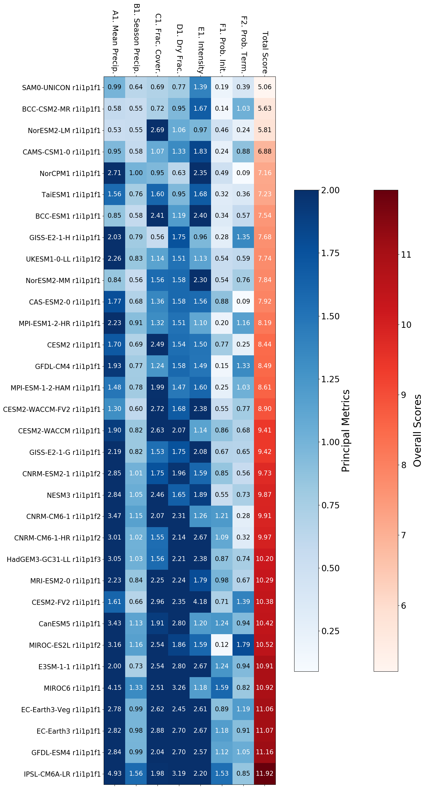
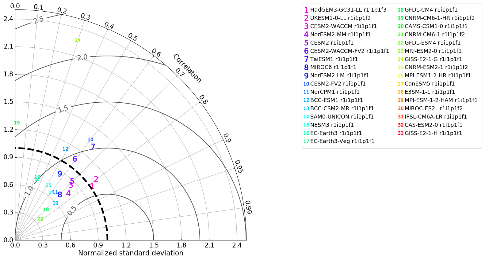

Drought Metrics New_England_Region
Drought Metrics Output for New England Region
Metrics files
all_metrics_in_New_England_Region.json
principal_metrics_in_New_England_Region.json
CMEC formatted outputs
all_metrics_in_New_England_Region_cmec.json
principal_metrics_in_New_England_Region_cmec.json
Plots


Note: Models do not appear on the Taylor Diagram if their statistics are outside the presented range.